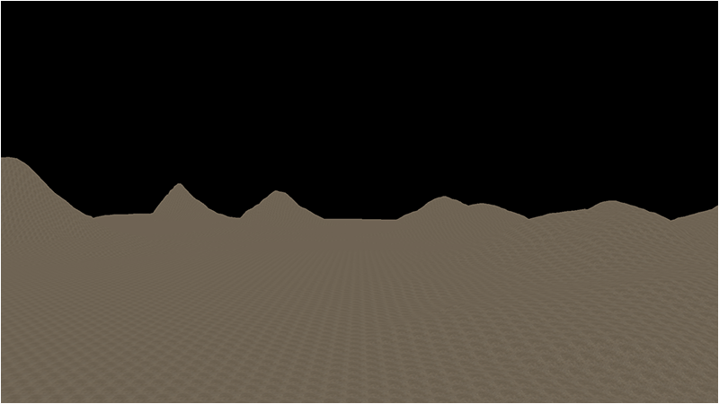
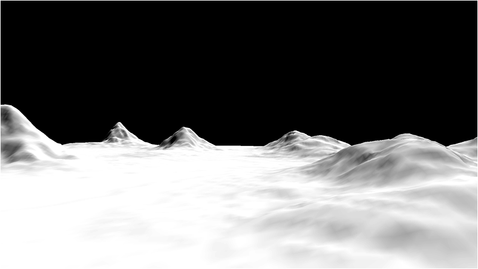
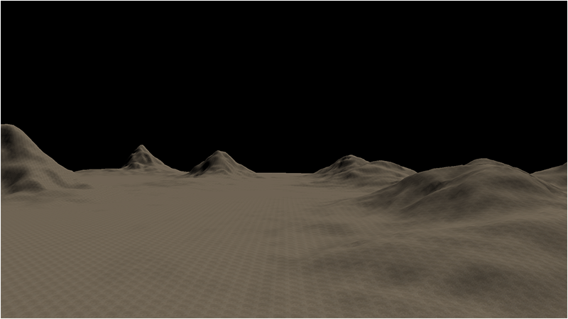
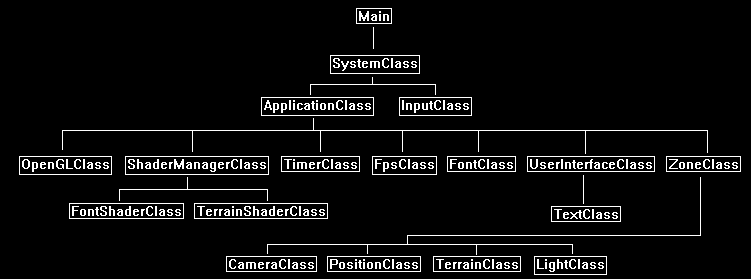

Lighting is one of the most critical aspects for producing realistic 3D rendered terrain.
And in this tutorial we will cover the basics of applying light to a 3D terrain.
The simplest lighting model is to use a single directional light to emulate on a very basic level how the sun illuminates the earth.
We simply define the direction of the light and then use the normals from the terrain to determine how much the terrain is illuminated by the directional light.
We will also cover how to calculate shared normals to provide smooth lighting transitions between all of the polygons.
In the previous tutorial we just applied a single texture with no lighting and it produced the following result:

However if we take the same terrain and apply one directional light pointing down at an angle on the terrain we get the following lighting result (untextured):

And then when we combine both lighting and texturing we get the following desired result:

As you can see it produces much better results than just a plain textured terrain.
Framework
The framework has been updated to include the basic LightClass from the OpenGL tutorial 6 on diffuse lighting.
This has been added under the ZoneClass.

Terrain.vs
For this tutorial we have modified the terrain shader to use the same directional light shader code from the OpenGL 4.0 tutorials.
////////////////////////////////////////////////////////////////////////////////
// Filename: terrain.vs
////////////////////////////////////////////////////////////////////////////////
#version 400
/////////////////////
// INPUT VARIABLES //
/////////////////////
in vec3 inputPosition;
in vec2 inputTexCoord;
in vec3 inputNormal;
//////////////////////
// OUTPUT VARIABLES //
//////////////////////
out vec2 texCoord;
out vec3 normal;
///////////////////////
// UNIFORM VARIABLES //
///////////////////////
uniform mat4 worldMatrix;
uniform mat4 viewMatrix;
uniform mat4 projectionMatrix;
////////////////////////////////////////////////////////////////////////////////
// Vertex Shader
////////////////////////////////////////////////////////////////////////////////
void main(void)
{
// Calculate the position of the vertex against the world, view, and projection matrices.
gl_Position = vec4(inputPosition, 1.0f) * worldMatrix;
gl_Position = gl_Position * viewMatrix;
gl_Position = gl_Position * projectionMatrix;
// Store the texture coordinates for the pixel shader.
texCoord = inputTexCoord;
// Calculate the normal vector against the world matrix only.
normal = inputNormal * mat3(worldMatrix);
// Normalize the normal vector.
normal = normalize(normal);
}
Terrain.ps
////////////////////////////////////////////////////////////////////////////////
// Filename: terrain.ps
////////////////////////////////////////////////////////////////////////////////
#version 400
/////////////////////
// INPUT VARIABLES //
/////////////////////
in vec2 texCoord;
in vec3 normal;
//////////////////////
// OUTPUT VARIABLES //
//////////////////////
out vec4 outputColor;
///////////////////////
// UNIFORM VARIABLES //
///////////////////////
uniform sampler2D shaderTexture;
uniform vec3 lightDirection;
uniform vec4 diffuseLightColor;
////////////////////////////////////////////////////////////////////////////////
// Pixel Shader
////////////////////////////////////////////////////////////////////////////////
void main(void)
{
vec4 textureColor;
vec3 lightDir;
float lightIntensity;
// Sample the pixel color from the texture using the sampler at this texture coordinate location.
textureColor = texture(shaderTexture, texCoord);
// Invert the light direction for calculations.
lightDir = -lightDirection;
// Calculate the amount of light on this pixel.
lightIntensity = clamp(dot(normal, lightDir), 0.0f, 1.0f);
// Determine the final amount of diffuse color based on the diffuse color combined with the light intensity.
outputColor = clamp((diffuseLightColor * lightIntensity), 0.0f, 1.0f);
// Multiply the texture pixel and the final diffuse color to get the final pixel color result.
outputColor = outputColor * textureColor;
}
Terrainshaderclass.h
////////////////////////////////////////////////////////////////////////////////
// Filename: terrainshaderclass.h
////////////////////////////////////////////////////////////////////////////////
#ifndef _TERRAINSHADERCLASS_H_
#define _TERRAINSHADERCLASS_H_
//////////////
// INCLUDES //
//////////////
#include <iostream>
using namespace std;
///////////////////////
// MY CLASS INCLUDES //
///////////////////////
#include "openglclass.h"
////////////////////////////////////////////////////////////////////////////////
// Class name: TerrainShaderClass
////////////////////////////////////////////////////////////////////////////////
class TerrainShaderClass
{
public:
TerrainShaderClass();
TerrainShaderClass(const TerrainShaderClass&);
~TerrainShaderClass();
bool Initialize(OpenGLClass*);
void Shutdown();
bool SetShaderParameters(float*, float*, float*, float*, float*);
private:
bool InitializeShader(char*, char*);
void ShutdownShader();
char* LoadShaderSourceFile(char*);
void OutputShaderErrorMessage(unsigned int, char*);
void OutputLinkerErrorMessage(unsigned int);
private:
OpenGLClass* m_OpenGLPtr;
unsigned int m_vertexShader;
unsigned int m_fragmentShader;
unsigned int m_shaderProgram;
};
#endif
Terrainshaderclass.cpp
////////////////////////////////////////////////////////////////////////////////
// Filename: terrainshaderclass.cpp
////////////////////////////////////////////////////////////////////////////////
#include "terrainshaderclass.h"
TerrainShaderClass::TerrainShaderClass()
{
m_OpenGLPtr = 0;
}
TerrainShaderClass::TerrainShaderClass(const TerrainShaderClass& other)
{
}
TerrainShaderClass::~TerrainShaderClass()
{
}
bool TerrainShaderClass::Initialize(OpenGLClass* OpenGL)
{
char vsFilename[128];
char psFilename[128];
bool result;
// Store the pointer to the OpenGL object.
m_OpenGLPtr = OpenGL;
// Set the location and names of the shader files.
strcpy(vsFilename, "../Engine/terrain.vs");
strcpy(psFilename, "../Engine/terrain.ps");
// Initialize the vertex and pixel shaders.
result = InitializeShader(vsFilename, psFilename);
if(!result)
{
return false;
}
return true;
}
void TerrainShaderClass::Shutdown()
{
// Shutdown the shader.
ShutdownShader();
// Release the pointer to the OpenGL object.
m_OpenGLPtr = 0;
return;
}
bool TerrainShaderClass::InitializeShader(char* vsFilename, char* fsFilename)
{
const char* vertexShaderBuffer;
const char* fragmentShaderBuffer;
int status;
// Load the vertex shader source file into a text buffer.
vertexShaderBuffer = LoadShaderSourceFile(vsFilename);
if(!vertexShaderBuffer)
{
return false;
}
// Load the fragment shader source file into a text buffer.
fragmentShaderBuffer = LoadShaderSourceFile(fsFilename);
if(!fragmentShaderBuffer)
{
return false;
}
// Create a vertex and fragment shader object.
m_vertexShader = m_OpenGLPtr->glCreateShader(GL_VERTEX_SHADER);
m_fragmentShader = m_OpenGLPtr->glCreateShader(GL_FRAGMENT_SHADER);
// Copy the shader source code strings into the vertex and fragment shader objects.
m_OpenGLPtr->glShaderSource(m_vertexShader, 1, &vertexShaderBuffer, NULL);
m_OpenGLPtr->glShaderSource(m_fragmentShader, 1, &fragmentShaderBuffer, NULL);
// Release the vertex and fragment shader buffers.
delete [] vertexShaderBuffer;
vertexShaderBuffer = 0;
delete [] fragmentShaderBuffer;
fragmentShaderBuffer = 0;
// Compile the shaders.
m_OpenGLPtr->glCompileShader(m_vertexShader);
m_OpenGLPtr->glCompileShader(m_fragmentShader);
// Check to see if the vertex shader compiled successfully.
m_OpenGLPtr->glGetShaderiv(m_vertexShader, GL_COMPILE_STATUS, &status);
if(status != 1)
{
// If it did not compile then write the syntax error message out to a text file for review.
OutputShaderErrorMessage(m_vertexShader, vsFilename);
return false;
}
// Check to see if the fragment shader compiled successfully.
m_OpenGLPtr->glGetShaderiv(m_fragmentShader, GL_COMPILE_STATUS, &status);
if(status != 1)
{
// If it did not compile then write the syntax error message out to a text file for review.
OutputShaderErrorMessage(m_fragmentShader, fsFilename);
return false;
}
// Create a shader program object.
m_shaderProgram = m_OpenGLPtr->glCreateProgram();
// Attach the vertex and fragment shader to the program object.
m_OpenGLPtr->glAttachShader(m_shaderProgram, m_vertexShader);
m_OpenGLPtr->glAttachShader(m_shaderProgram, m_fragmentShader);
// Bind the shader input variables.
m_OpenGLPtr->glBindAttribLocation(m_shaderProgram, 0, "inputPosition");
m_OpenGLPtr->glBindAttribLocation(m_shaderProgram, 1, "inputTexCoord");
m_OpenGLPtr->glBindAttribLocation(m_shaderProgram, 2, "inputNormal");
// Link the shader program.
m_OpenGLPtr->glLinkProgram(m_shaderProgram);
// Check the status of the link.
m_OpenGLPtr->glGetProgramiv(m_shaderProgram, GL_LINK_STATUS, &status);
if(status != 1)
{
// If it did not link then write the syntax error message out to a text file for review.
OutputLinkerErrorMessage(m_shaderProgram);
return false;
}
return true;
}
void TerrainShaderClass::ShutdownShader()
{
// Detach the vertex and fragment shaders from the program.
m_OpenGLPtr->glDetachShader(m_shaderProgram, m_vertexShader);
m_OpenGLPtr->glDetachShader(m_shaderProgram, m_fragmentShader);
// Delete the vertex and fragment shaders.
m_OpenGLPtr->glDeleteShader(m_vertexShader);
m_OpenGLPtr->glDeleteShader(m_fragmentShader);
// Delete the shader program.
m_OpenGLPtr->glDeleteProgram(m_shaderProgram);
return;
}
char* TerrainShaderClass::LoadShaderSourceFile(char* filename)
{
FILE* filePtr;
char* buffer;
long fileSize, count;
int error;
// Open the shader file for reading in text modee.
filePtr = fopen(filename, "r");
if(filePtr == NULL)
{
return 0;
}
// Go to the end of the file and get the size of the file.
fseek(filePtr, 0, SEEK_END);
fileSize = ftell(filePtr);
// Initialize the buffer to read the shader source file into, adding 1 for an extra null terminator.
buffer = new char[fileSize + 1];
// Return the file pointer back to the beginning of the file.
fseek(filePtr, 0, SEEK_SET);
// Read the shader text file into the buffer.
count = fread(buffer, 1, fileSize, filePtr);
if(count != fileSize)
{
return 0;
}
// Close the file.
error = fclose(filePtr);
if(error != 0)
{
return 0;
}
// Null terminate the buffer.
buffer[fileSize] = '\0';
return buffer;
}
void TerrainShaderClass::OutputShaderErrorMessage(unsigned int shaderId, char* shaderFilename)
{
long count;
int logSize, error;
char* infoLog;
FILE* filePtr;
// Get the size of the string containing the information log for the failed shader compilation message.
m_OpenGLPtr->glGetShaderiv(shaderId, GL_INFO_LOG_LENGTH, &logSize);
// Increment the size by one to handle also the null terminator.
logSize++;
// Create a char buffer to hold the info log.
infoLog = new char[logSize];
// Now retrieve the info log.
m_OpenGLPtr->glGetShaderInfoLog(shaderId, logSize, NULL, infoLog);
// Open a text file to write the error message to.
filePtr = fopen("shader-error.txt", "w");
if(filePtr == NULL)
{
cout << "Error opening shader error message output file." << endl;
return;
}
// Write out the error message.
count = fwrite(infoLog, sizeof(char), logSize, filePtr);
if(count != logSize)
{
cout << "Error writing shader error message output file." << endl;
return;
}
// Close the file.
error = fclose(filePtr);
if(error != 0)
{
cout << "Error closing shader error message output file." << endl;
return;
}
// Notify the user to check the text file for compile errors.
cout << "Error compiling shader. Check shader-error.txt for error message. Shader filename: " << shaderFilename << endl;
return;
}
void TerrainShaderClass::OutputLinkerErrorMessage(unsigned int programId)
{
long count;
FILE* filePtr;
int logSize, error;
char* infoLog;
// Get the size of the string containing the information log for the failed shader compilation message.
m_OpenGLPtr->glGetProgramiv(programId, GL_INFO_LOG_LENGTH, &logSize);
// Increment the size by one to handle also the null terminator.
logSize++;
// Create a char buffer to hold the info log.
infoLog = new char[logSize];
// Now retrieve the info log.
m_OpenGLPtr->glGetProgramInfoLog(programId, logSize, NULL, infoLog);
// Open a file to write the error message to.
filePtr = fopen("linker-error.txt", "w");
if(filePtr == NULL)
{
cout << "Error opening linker error message output file." << endl;
return;
}
// Write out the error message.
count = fwrite(infoLog, sizeof(char), logSize, filePtr);
if(count != logSize)
{
cout << "Error writing linker error message output file." << endl;
return;
}
// Close the file.
error = fclose(filePtr);
if(error != 0)
{
cout << "Error closing linker error message output file." << endl;
return;
}
// Pop a message up on the screen to notify the user to check the text file for linker errors.
cout << "Error linking shader program. Check linker-error.txt for message." << endl;
return;
}
bool TerrainShaderClass::SetShaderParameters(float* worldMatrix, float* viewMatrix, float* projectionMatrix, float* lightDirection, float* diffuseLightColor)
{
float tpWorldMatrix[16], tpViewMatrix[16], tpProjectionMatrix[16];
int location;
// Transpose the matrices to prepare them for the shader.
m_OpenGLPtr->MatrixTranspose(tpWorldMatrix, worldMatrix);
m_OpenGLPtr->MatrixTranspose(tpViewMatrix, viewMatrix);
m_OpenGLPtr->MatrixTranspose(tpProjectionMatrix, projectionMatrix);
// Install the shader program as part of the current rendering state.
m_OpenGLPtr->glUseProgram(m_shaderProgram);
// Set the world matrix in the vertex shader.
location = m_OpenGLPtr->glGetUniformLocation(m_shaderProgram, "worldMatrix");
if(location == -1)
{
cout << "World matrix not set." << endl;
}
m_OpenGLPtr ->glUniformMatrix4fv(location, 1, false, tpWorldMatrix);
// Set the view matrix in the vertex shader.
location = m_OpenGLPtr->glGetUniformLocation(m_shaderProgram, "viewMatrix");
if(location == -1)
{
cout << "View matrix not set." << endl;
}
m_OpenGLPtr->glUniformMatrix4fv(location, 1, false, tpViewMatrix);
// Set the projection matrix in the vertex shader.
location = m_OpenGLPtr->glGetUniformLocation(m_shaderProgram, "projectionMatrix");
if(location == -1)
{
cout << "Projection matrix not set." << endl;
}
m_OpenGLPtr->glUniformMatrix4fv(location, 1, false, tpProjectionMatrix);
// Set the texture in the pixel shader to use the data from the first texture unit.
location = m_OpenGLPtr->glGetUniformLocation(m_shaderProgram, "shaderTexture");
if(location == -1)
{
cout << "Shader texture not set." << endl;
}
m_OpenGLPtr->glUniform1i(location, 0);
// Set the light direction in the pixel shader.
location = m_OpenGLPtr->glGetUniformLocation(m_shaderProgram, "lightDirection");
if(location == -1)
{
cout << "Light direction not set." << endl;
}
m_OpenGLPtr->glUniform3fv(location, 1, lightDirection);
// Set the diffuse light color in the pixel shader.
location = m_OpenGLPtr->glGetUniformLocation(m_shaderProgram, "diffuseLightColor");
if(location == -1)
{
cout << "Diffuse light color not set." << endl;
}
m_OpenGLPtr->glUniform4fv(location, 1, diffuseLightColor);
return true;
}
Shadermanagerclass.h
We have modfied the ShaderManagerClass as the terrain shader will now take in two light inputs for the direction of the light and the color of the light.
////////////////////////////////////////////////////////////////////////////////
// Filename: shadermanagerclass.h
////////////////////////////////////////////////////////////////////////////////
#ifndef _SHADERMANAGERCLASS_H_
#define _SHADERMANAGERCLASS_H_
///////////////////////
// MY CLASS INCLUDES //
///////////////////////
#include "fontshaderclass.h"
#include "terrainshaderclass.h"
////////////////////////////////////////////////////////////////////////////////
// Class name: ShaderManagerClass
////////////////////////////////////////////////////////////////////////////////
class ShaderManagerClass
{
public:
ShaderManagerClass();
ShaderManagerClass(const ShaderManagerClass&);
~ShaderManagerClass();
bool Initialize(OpenGLClass*);
void Shutdown();
bool RenderFontShader(float*, float*, float*, float*);
bool RenderTerrainShader(float*, float*, float*, float*, float*);
private:
FontShaderClass* m_FontShader;
TerrainShaderClass* m_TerrainShader;
};
#endif
Shadermanagerclass.cpp
////////////////////////////////////////////////////////////////////////////////
// Filename: shadermanagerclass.cpp
////////////////////////////////////////////////////////////////////////////////
#include "shadermanagerclass.h"
ShaderManagerClass::ShaderManagerClass()
{
m_FontShader = 0;
m_TerrainShader = 0;
}
ShaderManagerClass::ShaderManagerClass(const ShaderManagerClass& other)
{
}
ShaderManagerClass::~ShaderManagerClass()
{
}
bool ShaderManagerClass::Initialize(OpenGLClass* OpenGL)
{
bool result;
// Create and initialize the font shader object.
m_FontShader = new FontShaderClass;
result = m_FontShader->Initialize(OpenGL);
if(!result)
{
return false;
}
// Create and initialize the terrain shader object.
m_TerrainShader = new TerrainShaderClass;
result = m_TerrainShader->Initialize(OpenGL);
if(!result)
{
return false;
}
return true;
}
void ShaderManagerClass::Shutdown()
{
// Release the terrain shader object.
if(m_TerrainShader)
{
m_TerrainShader->Shutdown();
delete m_TerrainShader;
m_TerrainShader = 0;
}
// Release the font shader object.
if(m_FontShader)
{
m_FontShader->Shutdown();
delete m_FontShader;
m_FontShader = 0;
}
return;
}
bool ShaderManagerClass::RenderFontShader(float* worldMatrix, float* viewMatrix, float* projectionMatrix, float* pixelColor)
{
return m_FontShader->SetShaderParameters(worldMatrix, viewMatrix, projectionMatrix, pixelColor);
}
bool ShaderManagerClass::RenderTerrainShader(float* worldMatrix, float* viewMatrix, float* projectionMatrix, float* lightDirection, float* diffuseLightColor)
{
return m_TerrainShader->SetShaderParameters(worldMatrix, viewMatrix, projectionMatrix, lightDirection, diffuseLightColor);
}
Terrainclass.h
The TerrainClass has been modified to accommodate normals for lighting as well as normal vector calculations.
////////////////////////////////////////////////////////////////////////////////
// Filename: terrainclass.h
////////////////////////////////////////////////////////////////////////////////
#ifndef _TERRAINCLASS_H_
#define _TERRAINCLASS_H_
//////////////
// INCLUDES //
//////////////
#include <fstream>
using namespace std;
///////////////////////
// MY CLASS INCLUDES //
///////////////////////
#include "shadermanagerclass.h"
#include "textureclass.h"
#include "lightclass.h"
////////////////////////////////////////////////////////////////////////////////
// Class name: TerrainClass
////////////////////////////////////////////////////////////////////////////////
class TerrainClass
{
private:
For lighting we require normal vectors, so we have updated all of our structures to now include them.
As well we have added a VectorType structure that we will use for calculating normal vectors.
struct VertexType
{
float x, y, z;
float tu, tv;
float nx, ny, nz;
};
struct HeightMapType
{
float x, y, z;
float nx, ny, nz;
};
struct ModelType
{
float x, y, z;
float tu, tv;
float nx, ny, nz;
};
struct VectorType
{
float x, y, z;
};
public:
TerrainClass();
TerrainClass(const TerrainClass&);
~TerrainClass();
bool Initialize(OpenGLClass*, char*);
void Shutdown(OpenGLClass*);
bool Render(OpenGLClass*, ShaderManagerClass*, LightClass*, float*, float*, float*);
private:
bool LoadSetupFile(char*, char*, float&, char*);
bool LoadBitmapHeightMap(char*);
void SetTerrainCoordinates(float);
We have also introduced a new function for calculating normals from our height map.
void CalculateNormals();
void BuildTerrainModel();
void ReleaseHeightMap();
void ReleaseTerrainModel();
bool InitializeBuffers(OpenGLClass*);
void ShutdownBuffers(OpenGLClass*);
void RenderBuffers(OpenGLClass*);
private:
int m_vertexCount, m_indexCount;
unsigned int m_vertexArrayId, m_vertexBufferId, m_indexBufferId;
int m_terrainHeight, m_terrainWidth;
HeightMapType* m_heightMap;
ModelType* m_terrainModel;
TextureClass* m_Texture;
};
#endif
Terrainclass.cpp
///////////////////////////////////////////////////////////////////////////////
// Filename: terrainclass.cpp
///////////////////////////////////////////////////////////////////////////////
#include "terrainclass.h"
TerrainClass::TerrainClass()
{
m_heightMap = 0;
m_terrainModel = 0;
m_Texture = 0;
}
TerrainClass::TerrainClass(const TerrainClass& other)
{
}
TerrainClass::~TerrainClass()
{
}
bool TerrainClass::Initialize(OpenGLClass* OpenGL, char* setupFilename)
{
char terrainFilename[256], textureFilename[256];
float heightScale;
bool result;
// Get the terrain filename, dimensions, and so forth from the setup file.
result = LoadSetupFile(setupFilename, terrainFilename, heightScale, textureFilename);
if(!result)
{
return false;
}
// Initialize the terrain height map with the data from the bitmap file.
result = LoadBitmapHeightMap(terrainFilename);
if(!result)
{
return false;
}
// Setup the X and Z coordinates for the height map as well as scale the terrain height by the height scale value.
SetTerrainCoordinates(heightScale);
After loading and setting the coordinates for the height map we now calculate all the normal vectors for that height map.
These normal vectors will then be loaded into the terrain model and finally used by the lighting shader to calculate the amount that we apply to the terrain.
// Calculate the normals for the terrain data.
CalculateNormals();
// Now build the 3D model of the terrain.
BuildTerrainModel();
// We can now release the height map since it is no longer needed in memory once the 3D terrain model has been built.
ReleaseHeightMap();
// Initialize the vertex and index buffer that hold the geometry for the terrain.
result = InitializeBuffers(OpenGL);
if(!result)
{
return false;
}
// Release the terrain model now that the rendering buffers have been loaded.
ReleaseTerrainModel();
// Create and initialize the diffuse texture object.
m_Texture = new TextureClass;
result = m_Texture->Initialize(OpenGL, textureFilename, false);
if(!result)
{
return false;
}
return true;
}
void TerrainClass::Shutdown(OpenGLClass* OpenGL)
{
// Release the diffuse texture object.
if(m_Texture)
{
m_Texture->Shutdown();
delete m_Texture;
m_Texture = 0;
}
// Release the vertex and index buffers.
ShutdownBuffers(OpenGL);
return;
}
bool TerrainClass::Render(OpenGLClass* OpenGL, ShaderManagerClass* ShaderManager, LightClass* Light, float* worldMatrix, float* viewMatrix, float* projectionMatrix)
{
float diffuseLightColor[4], lightDirection[3];
bool result, wireFrame;
Get the light properties for the shader.
// Get the light properties.
Light->GetDirection(lightDirection);
Light->GetDiffuseColor(diffuseLightColor);
// Set wireframe mode off.
wireFrame = false;
// Enable wireframe mode to see triangles composing the terrain clearly.
if(wireFrame)
{
OpenGL->EnableWireframe();
}
Send the light properties into the shader.
// Set the terrain shader as the current shader program and set the matrices that it will use for rendering.
result = ShaderManager->RenderTerrainShader(worldMatrix, viewMatrix, projectionMatrix, lightDirection, diffuseLightColor);
if(!result)
{
return false;
}
// Set the diffuse texture for the terrain in the pixel shader texture unit 0.
m_Texture->SetTexture(OpenGL, 0);
// Put the vertex and index buffers on the graphics pipeline to prepare them for drawing.
RenderBuffers(OpenGL);
// Disable wireframe mode after rendering terrain.
if(wireFrame)
{
OpenGL->DisableWireframe();
}
return true;
}
bool TerrainClass::LoadSetupFile(char* filename, char* terrainFilename, float& heightScale, char* textureFilename)
{
ifstream fin;
char input;
// Open the setup file. If it could not open the file then exit.
fin.open(filename);
if(fin.fail())
{
return false;
}
// Read up to the terrain file name.
fin.get(input);
while(input != ':')
{
fin.get(input);
}
// Read in the terrain file name.
fin >> terrainFilename;
// Read up to the value of terrain height.
fin.get(input);
while(input != ':')
{
fin.get(input);
}
// Read in the terrain height.
fin >> m_terrainHeight;
// Read up to the value of terrain width.
fin.get(input);
while(input != ':')
{
fin.get(input);
}
// Read in the terrain width.
fin >> m_terrainWidth;
// Read up to the value of terrain height scaling.
fin.get(input);
while(input != ':')
{
fin.get(input);
}
// Read in the terrain height scaling.
fin >> heightScale;
// Read up to the texture file name.
fin.get(input);
while(input != ':')
{
fin.get(input);
}
// Read in the texture file name.
fin >> textureFilename;
// Close the setup file.
fin.close();
return true;
}
bool TerrainClass::LoadBitmapHeightMap(char* terrainFilename)
{
FILE* filePtr;
unsigned char* bitmapImage;
unsigned char fileHeader[54];
unsigned long count;
int height, width, imageSize, i, j, k, index, error;
unsigned char pixelHeight;
// Start by creating the array structure to hold the height map data.
m_heightMap = new HeightMapType[m_terrainWidth * m_terrainHeight];
// Open the bitmap map file in binary.
filePtr = fopen(terrainFilename, "rb");
if(filePtr == NULL)
{
return false;
}
// Read in the bitmap file header which is 54 bytes.
count = fread(fileHeader, sizeof(unsigned char), 54, filePtr);
if(count != 54)
{
return false;
}
// Get the width and height integers from the unsigned char header data.
height = (int)fileHeader[23];
height <<= 8;
height += (int)fileHeader[22];
width = (int)fileHeader[19];
width <<= 8;
width += (int)fileHeader[18];
// Make sure the height map dimensions are the same as the terrain dimensions for easy 1 to 1 mapping.
if((height != m_terrainHeight) || (width != m_terrainWidth))
{
return false;
}
// Calculate the size of the bitmap image data.
// Since we use non-divide by 2 dimensions (eg. 257x257) we need to add an extra byte to each line.
imageSize = m_terrainHeight * ((m_terrainWidth * 3) + 1);
// Allocate memory for the bitmap image data.
bitmapImage = new unsigned char[imageSize];
// Read in the bitmap image data.
count = fread(bitmapImage, 1, imageSize, filePtr);
if((int)count != imageSize)
{
return false;
}
// Close the file.
error = fclose(filePtr);
if(error != 0)
{
return false;
}
// Initialize the position in the image data buffer.
k=0;
// Read the image data into the height map array.
for(j=0; j<m_terrainHeight; j++)
{
for(i=0; i<m_terrainWidth; i++)
{
// Bitmaps are upside down so load bottom to top into the height map array.
index = (m_terrainWidth * (m_terrainHeight - 1 - j)) + i;
// Get the grey scale pixel value from the bitmap image data at this location.
pixelHeight = bitmapImage[k];
// Store the pixel value as the height at this point in the height map array.
m_heightMap[index].y = (float)pixelHeight;
// Increment the bitmap image data index.
k+=3;
}
// Compensate for the extra byte at end of each line in non-divide by 2 bitmaps (eg. 257x257).
k++;
}
// Release the bitmap image data now that the height map array has been loaded.
delete [] bitmapImage;
bitmapImage = 0;
return true;
}
void TerrainClass::SetTerrainCoordinates(float heightScale)
{
int i, j, index;
// Loop through all the elements in the height map array and adjust their coordinates correctly.
for(j=0; j<m_terrainHeight; j++)
{
for(i=0; i<m_terrainWidth; i++)
{
index = (m_terrainWidth * j) + i;
// Set the X and Z coordinates.
m_heightMap[index].x = (float)i;
m_heightMap[index].z = -(float)j;
// Move the terrain depth into the positive range. For example from (0, -256) to (256, 0).
m_heightMap[index].z += (float)(m_terrainHeight - 1);
// Scale the height.
m_heightMap[index].y /= heightScale;
}
}
return;
}
This is the new function we use to calculate normals from the height map.
And we don't just calculate regular normals per triangle, instead we calculate a weighted normal for each vertex based on the average of all the neighbor vertex normals.
The end result is shared normals that produce a smooth transition of light over the face of each triangle.
void TerrainClass::CalculateNormals()
{
int i, j, index1, index2, index3, index;
float vertex1[3], vertex2[3], vertex3[3], vector1[3], vector2[3], sum[3], length;
VectorType* normals;
// Create a temporary array to hold the face normal vectors.
normals = new VectorType[(m_terrainHeight-1) * (m_terrainWidth-1)];
// Go through all the faces in the mesh and calculate their normals.
for(j=0; j<(m_terrainHeight-1); j++)
{
for(i=0; i<(m_terrainWidth-1); i++)
{
index1 = ((j+1) * m_terrainWidth) + i; // Bottom left vertex.
index2 = ((j+1) * m_terrainWidth) + (i+1); // Bottom right vertex.
index3 = (j * m_terrainWidth) + i; // Upper left vertex.
// Get three vertices from the face.
vertex1[0] = m_heightMap[index1].x;
vertex1[1] = m_heightMap[index1].y;
vertex1[2] = m_heightMap[index1].z;
vertex2[0] = m_heightMap[index2].x;
vertex2[1] = m_heightMap[index2].y;
vertex2[2] = m_heightMap[index2].z;
vertex3[0] = m_heightMap[index3].x;
vertex3[1] = m_heightMap[index3].y;
vertex3[2] = m_heightMap[index3].z;
// Calculate the two vectors for this face.
vector1[0] = vertex1[0] - vertex3[0];
vector1[1] = vertex1[1] - vertex3[1];
vector1[2] = vertex1[2] - vertex3[2];
vector2[0] = vertex3[0] - vertex2[0];
vector2[1] = vertex3[1] - vertex2[1];
vector2[2] = vertex3[2] - vertex2[2];
index = (j * (m_terrainWidth - 1)) + i;
// Calculate the cross product of those two vectors to get the un-normalized value for this face normal.
normals[index].x = (vector1[1] * vector2[2]) - (vector1[2] * vector2[1]);
normals[index].y = (vector1[2] * vector2[0]) - (vector1[0] * vector2[2]);
normals[index].z = (vector1[0] * vector2[1]) - (vector1[1] * vector2[0]);
// Calculate the length.
length = (float)sqrt((normals[index].x * normals[index].x) + (normals[index].y * normals[index].y) +
(normals[index].z * normals[index].z));
// Normalize the final value for this face using the length.
normals[index].x = (normals[index].x / length);
normals[index].y = (normals[index].y / length);
normals[index].z = (normals[index].z / length);
}
}
// Now go through all the vertices and take a sum of the face normals that touch this vertex.
for(j=0; j<m_terrainHeight; j++)
{
for(i=0; i<m_terrainWidth; i++)
{
// Initialize the sum.
sum[0] = 0.0f;
sum[1] = 0.0f;
sum[2] = 0.0f;
// Bottom left face.
if(((i-1) >= 0) && ((j-1) >= 0))
{
index = ((j-1) * (m_terrainWidth-1)) + (i-1);
sum[0] += normals[index].x;
sum[1] += normals[index].y;
sum[2] += normals[index].z;
}
// Bottom right face.
if((i<(m_terrainWidth-1)) && ((j-1) >= 0))
{
index = ((j - 1) * (m_terrainWidth - 1)) + i;
sum[0] += normals[index].x;
sum[1] += normals[index].y;
sum[2] += normals[index].z;
}
// Upper left face.
if(((i-1) >= 0) && (j<(m_terrainHeight-1)))
{
index = (j * (m_terrainWidth-1)) + (i-1);
sum[0] += normals[index].x;
sum[1] += normals[index].y;
sum[2] += normals[index].z;
}
// Upper right face.
if((i < (m_terrainWidth-1)) && (j < (m_terrainHeight-1)))
{
index = (j * (m_terrainWidth-1)) + i;
sum[0] += normals[index].x;
sum[1] += normals[index].y;
sum[2] += normals[index].z;
}
// Calculate the length of this normal.
length = (float)sqrt((sum[0] * sum[0]) + (sum[1] * sum[1]) + (sum[2] * sum[2]));
// Get an index to the vertex location in the height map array.
index = (j * m_terrainWidth) + i;
// Normalize the final shared normal for this vertex and store it in the height map array.
m_heightMap[index].nx = (sum[0] / length);
m_heightMap[index].ny = (sum[1] / length);
m_heightMap[index].nz = (sum[2] / length);
}
}
// Release the temporary normals.
delete [] normals;
normals = 0;
return;
}
When we build our terrain model from the height map we also include the new normal vectors for each vertex.
void TerrainClass::BuildTerrainModel()
{
int vertexCount, i, j, index, index1, index2, index3, index4;
// Calculate the number of vertices in the 3D terrain model.
vertexCount = (m_terrainHeight - 1) * (m_terrainWidth - 1) * 6;
// Create the 3D terrain model array.
m_terrainModel = new ModelType[vertexCount];
// Initialize the index into the height map array.
index = 0;
// Load the 3D terrain model with the height map terrain data.
// We will be creating 2 triangles for each of the four points in a quad.
for(j=0; j<(m_terrainHeight-1); j++)
{
for(i=0; i<(m_terrainWidth-1); i++)
{
// Get the indexes to the four points of the quad.
index1 = (m_terrainWidth * j) + i; // Upper left.
index2 = (m_terrainWidth * j) + (i+1); // Upper right.
index3 = (m_terrainWidth * (j+1)) + i; // Bottom left.
index4 = (m_terrainWidth * (j+1)) + (i+1); // Bottom right.
// Now create two triangles for that quad.
// Triangle 1 - Upper left.
m_terrainModel[index].x = m_heightMap[index1].x;
m_terrainModel[index].y = m_heightMap[index1].y;
m_terrainModel[index].z = m_heightMap[index1].z;
m_terrainModel[index].tu = 0.0f;
m_terrainModel[index].tv = 1.0f;
m_terrainModel[index].nx = m_heightMap[index1].nx;
m_terrainModel[index].ny = m_heightMap[index1].ny;
m_terrainModel[index].nz = m_heightMap[index1].nz;
index++;
// Triangle 1 - Upper right.
m_terrainModel[index].x = m_heightMap[index2].x;
m_terrainModel[index].y = m_heightMap[index2].y;
m_terrainModel[index].z = m_heightMap[index2].z;
m_terrainModel[index].tu = 1.0f;
m_terrainModel[index].tv = 1.0f;
m_terrainModel[index].nx = m_heightMap[index2].nx;
m_terrainModel[index].ny = m_heightMap[index2].ny;
m_terrainModel[index].nz = m_heightMap[index2].nz;
index++;
// Triangle 1 - Bottom left.
m_terrainModel[index].x = m_heightMap[index3].x;
m_terrainModel[index].y = m_heightMap[index3].y;
m_terrainModel[index].z = m_heightMap[index3].z;
m_terrainModel[index].tu = 0.0f;
m_terrainModel[index].tv = 0.0f;
m_terrainModel[index].nx = m_heightMap[index3].nx;
m_terrainModel[index].ny = m_heightMap[index3].ny;
m_terrainModel[index].nz = m_heightMap[index3].nz;
index++;
// Triangle 2 - Bottom left.
m_terrainModel[index].x = m_heightMap[index3].x;
m_terrainModel[index].y = m_heightMap[index3].y;
m_terrainModel[index].z = m_heightMap[index3].z;
m_terrainModel[index].tu = 0.0f;
m_terrainModel[index].tv = 0.0f;
m_terrainModel[index].nx = m_heightMap[index3].nx;
m_terrainModel[index].ny = m_heightMap[index3].ny;
m_terrainModel[index].nz = m_heightMap[index3].nz;
index++;
// Triangle 2 - Upper right.
m_terrainModel[index].x = m_heightMap[index2].x;
m_terrainModel[index].y = m_heightMap[index2].y;
m_terrainModel[index].z = m_heightMap[index2].z;
m_terrainModel[index].tu = 1.0f;
m_terrainModel[index].tv = 1.0f;
m_terrainModel[index].nx = m_heightMap[index2].nx;
m_terrainModel[index].ny = m_heightMap[index2].ny;
m_terrainModel[index].nz = m_heightMap[index2].nz;
index++;
// Triangle 2 - Bottom right.
m_terrainModel[index].x = m_heightMap[index4].x;
m_terrainModel[index].y = m_heightMap[index4].y;
m_terrainModel[index].z = m_heightMap[index4].z;
m_terrainModel[index].tu = 1.0f;
m_terrainModel[index].tv = 0.0f;
m_terrainModel[index].nx = m_heightMap[index4].nx;
m_terrainModel[index].ny = m_heightMap[index4].ny;
m_terrainModel[index].nz = m_heightMap[index4].nz;
index++;
}
}
return;
}
void TerrainClass::ReleaseHeightMap()
{
// Release the height map array.
if(m_heightMap)
{
delete [] m_heightMap;
m_heightMap = 0;
}
return;
}
void TerrainClass::ReleaseTerrainModel()
{
// Release the terrain model data.
if(m_terrainModel)
{
delete [] m_terrainModel;
m_terrainModel = 0;
}
return;
}
When we load the vertex buffer with data from the terrain model we now include the new normal vectors for lighting calculations.
bool TerrainClass::InitializeBuffers(OpenGLClass* OpenGL)
{
VertexType* vertices;
unsigned int* indices;
int i;
// Calculate the number of vertices in the terrain.
m_vertexCount = (m_terrainHeight - 1) * (m_terrainWidth - 1) * 6;
// Set the index count to the same as the vertex count.
m_indexCount = m_vertexCount;
// Create the vertex array.
vertices = new VertexType[m_vertexCount];
// Create the index array.
indices = new unsigned int[m_indexCount];
// Load the vertex array and index array with 3D terrain model data.
for(i=0; i<m_vertexCount; i++)
{
vertices[i].x = m_terrainModel[i].x;
vertices[i].y = m_terrainModel[i].y;
vertices[i].z = m_terrainModel[i].z;
vertices[i].tu = m_terrainModel[i].tu;
vertices[i].tv = m_terrainModel[i].tv;
vertices[i].nx = m_terrainModel[i].nx;
vertices[i].ny = m_terrainModel[i].ny;
vertices[i].nz = m_terrainModel[i].nz;
indices[i] = i;
}
// Allocate an OpenGL vertex array object.
OpenGL->glGenVertexArrays(1, &m_vertexArrayId);
// Bind the vertex array object to store all the buffers and vertex attributes we create here.
OpenGL->glBindVertexArray(m_vertexArrayId);
// Generate an ID for the vertex buffer.
OpenGL->glGenBuffers(1, &m_vertexBufferId);
// Bind the vertex buffer and load the vertex (position and color) data into the vertex buffer.
OpenGL->glBindBuffer(GL_ARRAY_BUFFER, m_vertexBufferId);
OpenGL->glBufferData(GL_ARRAY_BUFFER, m_vertexCount * sizeof(VertexType), vertices, GL_STATIC_DRAW);
// Enable the two vertex array attributes.
OpenGL->glEnableVertexAttribArray(0); // Vertex position.
OpenGL->glEnableVertexAttribArray(1); // Texture coordinates.
OpenGL->glEnableVertexAttribArray(2); // Normals.
// Specify the location and format of the position portion of the vertex buffer.
OpenGL->glVertexAttribPointer(0, 3, GL_FLOAT, false, sizeof(VertexType), 0);
// Specify the location and format of the texture portion of the vertex buffer.
OpenGL->glVertexAttribPointer(1, 2, GL_FLOAT, false, sizeof(VertexType), (unsigned char*)NULL + (3 * sizeof(float)));
// Specify the location and format of the normal vector portion of the vertex buffer.
OpenGL->glVertexAttribPointer(2, 3, GL_FLOAT, false, sizeof(VertexType), (unsigned char*)NULL + (5 * sizeof(float)));
// Generate an ID for the index buffer.
OpenGL->glGenBuffers(1, &m_indexBufferId);
// Bind the index buffer and load the index data into it.
OpenGL->glBindBuffer(GL_ELEMENT_ARRAY_BUFFER, m_indexBufferId);
OpenGL->glBufferData(GL_ELEMENT_ARRAY_BUFFER, m_indexCount* sizeof(unsigned int), indices, GL_STATIC_DRAW);
// Now that the buffers have been loaded we can release the array data.
delete [] vertices;
vertices = 0;
delete [] indices;
indices = 0;
return true;
}
void TerrainClass::ShutdownBuffers(OpenGLClass* OpenGL)
{
// Release the vertex array object.
OpenGL->glBindVertexArray(0);
OpenGL->glDeleteVertexArrays(1, &m_vertexArrayId);
// Release the vertex buffer.
OpenGL->glBindBuffer(GL_ARRAY_BUFFER, 0);
OpenGL->glDeleteBuffers(1, &m_vertexBufferId);
// Release the index buffer.
OpenGL->glBindBuffer(GL_ELEMENT_ARRAY_BUFFER, 0);
OpenGL->glDeleteBuffers(1, &m_indexBufferId);
return;
}
void TerrainClass::RenderBuffers(OpenGLClass* OpenGL)
{
// Bind the vertex array object that stored all the information about the vertex and index buffers.
OpenGL->glBindVertexArray(m_vertexArrayId);
// Render the vertex buffer as triangles using the index buffer.
glDrawElements(GL_TRIANGLES, m_indexCount, GL_UNSIGNED_INT, 0);
return;
}
Zoneclass.h
We have incorporated the LightClass from the OpenGL 4.0 tutorials into the ZoneClass.
For this tutorial we will use this light to represent the directional sun light that affects the terrain lighting output.
///////////////////////////////////////////////////////////////////////////////
// Filename: zoneclass.h
///////////////////////////////////////////////////////////////////////////////
#ifndef _ZONECLASS_H_
#define _ZONECLASS_H_
///////////////////////
// MY CLASS INCLUDES //
///////////////////////
#include "openglclass.h"
#include "inputclass.h"
#include "userinterfaceclass.h"
#include "cameraclass.h"
#include "positionclass.h"
#include "terrainclass.h"
////////////////////////////////////////////////////////////////////////////////
// Class name: ZoneClass
////////////////////////////////////////////////////////////////////////////////
class ZoneClass
{
public:
ZoneClass();
ZoneClass(const ZoneClass&);
~ZoneClass();
bool Initialize(OpenGLClass*);
void Shutdown(OpenGLClass*);
bool Frame(OpenGLClass*, ShaderManagerClass*, FontClass*, UserInterfaceClass*, InputClass*, float);
private:
bool Render(OpenGLClass*, ShaderManagerClass*, FontClass*, UserInterfaceClass*);
void HandleMovementInput(InputClass*, float);
private:
CameraClass* m_Camera;
PositionClass* m_Position;
TerrainClass* m_Terrain;
LightClass* m_Light;
};
#endif
Zoneclass.cpp
////////////////////////////////////////////////////////////////////////////////
// Filename: zoneclass.cpp
////////////////////////////////////////////////////////////////////////////////
#include "zoneclass.h"
ZoneClass::ZoneClass()
{
m_Camera = 0;
m_Position = 0;
m_Terrain = 0;
m_Light = 0;
}
ZoneClass::ZoneClass(const ZoneClass& other)
{
}
ZoneClass::~ZoneClass()
{
}
bool ZoneClass::Initialize(OpenGLClass* OpenGL)
{
char configFilename[256];
bool result;
// Create and initialize the camera object.
m_Camera = new CameraClass;
m_Camera->SetPosition(0.0f, 0.0f, -10.0f);
m_Camera->Render();
m_Camera->RenderBaseViewMatrix();
// Create and initialize the position object.
m_Position = new PositionClass;
m_Position->SetPosition(128.0f, 10.0f, -10.0f);
m_Position->SetRotation(0.0f, 0.0f, 0.0f);
// Create and initialize the terrain object.
m_Terrain = new TerrainClass;
strcpy(configFilename, "../Engine/data/setup.txt");
result = m_Terrain->Initialize(OpenGL, configFilename);
if(!result)
{
cout << "Error: Could not initialize the terrain object." << endl;
return false;
}
Here is where we create our light source.
We have created a white directional light that is pointing downwards at an angle towards the terrain to simulate sun light.
This light will be passed into the light shader when we render the terrain for lighting calculations.
// Create and initialize the light object.
m_Light = new LightClass;
m_Light->SetDiffuseColor(1.0f, 1.0f, 1.0f, 1.0f);
m_Light->SetDirection(-0.5f, -1.0f, -0.5f);
return true;
}
void ZoneClass::Shutdown(OpenGLClass* OpenGL)
{
// Release the light object.
if(m_Light)
{
delete m_Light;
m_Light = 0;
}
// Release the terrain object.
if(m_Terrain)
{
m_Terrain->Shutdown(OpenGL);
delete m_Terrain;
m_Terrain = 0;
}
// Release the position object.
if(m_Position)
{
delete m_Position;
m_Position = 0;
}
// Release the camera object.
if(m_Camera)
{
delete m_Camera;
m_Camera = 0;
}
return;
}
bool ZoneClass::Frame(OpenGLClass* OpenGL, ShaderManagerClass* ShaderManager, FontClass* Font, UserInterfaceClass* UserInterface, InputClass* Input, float frameTime)
{
float posX, posY, posZ, rotX, rotY, rotZ;
bool result;
// Do the frame input processing for the movement.
HandleMovementInput(Input, frameTime);
// Get the view point position/rotation.
m_Position->GetPosition(posX, posY, posZ);
m_Position->GetRotation(rotX, rotY, rotZ);
// Update the UI with the position.
UserInterface->UpdatePositonStrings(Font, posX, posY, posZ, rotX, rotY, rotZ);
// Render the zone.
result = Render(OpenGL, ShaderManager, Font, UserInterface);
if(!result)
{
return false;
}
return true;
}
bool ZoneClass::Render(OpenGLClass* OpenGL, ShaderManagerClass* ShaderManager, FontClass* Font, UserInterfaceClass* UserInterface)
{
float worldMatrix[16], viewMatrix[16], projectionMatrix[16], baseViewMatrix[16], orthoMatrix[16];
bool result;
// Get the world, view, and ortho matrices from the opengl and camera objects.
OpenGL->GetWorldMatrix(worldMatrix);
m_Camera->GetViewMatrix(viewMatrix);
OpenGL->GetProjectionMatrix(projectionMatrix);
m_Camera->GetBaseViewMatrix(baseViewMatrix);
OpenGL->GetOrthoMatrix(orthoMatrix);
// Clear the scene.
OpenGL->BeginScene(0.0f, 0.0f, 0.0f, 1.0f);
When we render the terrain we now pass in the light.
// Render the terrain using the terrain shader.
result = m_Terrain->Render(OpenGL, ShaderManager, m_Light, worldMatrix, viewMatrix, projectionMatrix);
if(!result)
{
return false;
}
// Render the user interface.
result = UserInterface->Render(OpenGL, ShaderManager, Font, worldMatrix, baseViewMatrix, orthoMatrix);
if(!result)
{
return false;
}
// Present the rendered scene to the screen.
OpenGL->EndScene();
return true;
}
void ZoneClass::HandleMovementInput(InputClass* Input, float frameTime)
{
float posX, posY, posZ, rotX, rotY, rotZ;
bool keyDown;
// Set the frame time for calculating the updated position.
m_Position->SetFrameTime(frameTime);
// Check if the input keys have been pressed. If so, then update the position accordingly.
keyDown = Input->IsLeftPressed();
m_Position->TurnLeft(keyDown);
keyDown = Input->IsRightPressed();
m_Position->TurnRight(keyDown);
keyDown = Input->IsUpPressed();
m_Position->MoveForward(keyDown);
keyDown = Input->IsDownPressed();
m_Position->MoveBackward(keyDown);
keyDown = Input->IsAPressed();
m_Position->MoveUpward(keyDown);
keyDown = Input->IsZPressed();
m_Position->MoveDownward(keyDown);
keyDown = Input->IsPgUpPressed();
m_Position->LookUpward(keyDown);
keyDown = Input->IsPgDownPressed();
m_Position->LookDownward(keyDown);
// Get the view point position/rotation.
m_Position->GetPosition(posX, posY, posZ);
m_Position->GetRotation(rotX, rotY, rotZ);
// Set the position of the camera.
m_Camera->SetPosition(posX, posY, posZ);
m_Camera->SetRotation(rotX, rotY, rotZ);
// Update the camera view matrix for rendering.
m_Camera->Render();
return;
}
Summary
Now when we render our terrain is has a sun light component that gives the terrain a more realistic appearance.
To Do Exercises
1. Recompile the code and use the input keys to move around to view the textured and illuminated terrain.
2. Modify the direction of the light.
3. Modify the color of the light.
4. Set the light to update each frame and rotate its angle to mimic the movement of the sun over the terrain.
5. Use the test.tga texture instead of the dirt texture to see the effect of the lighting on that as well.
6. Change the terrain pixel shader to return just the untextured light result.
Source Code
Source Code and Data Files: gl4terlinux04.tar.gz